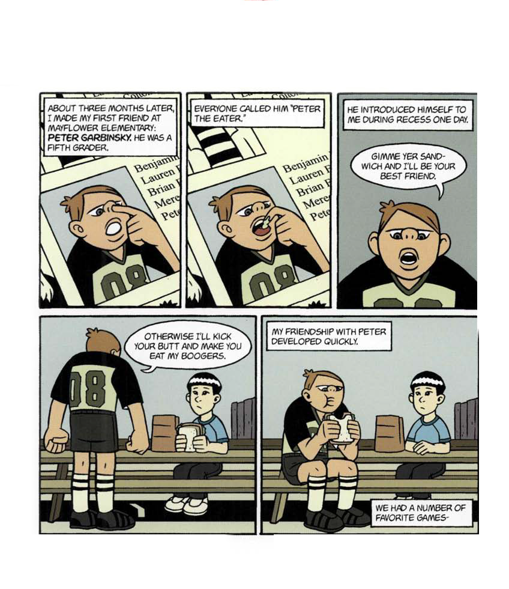
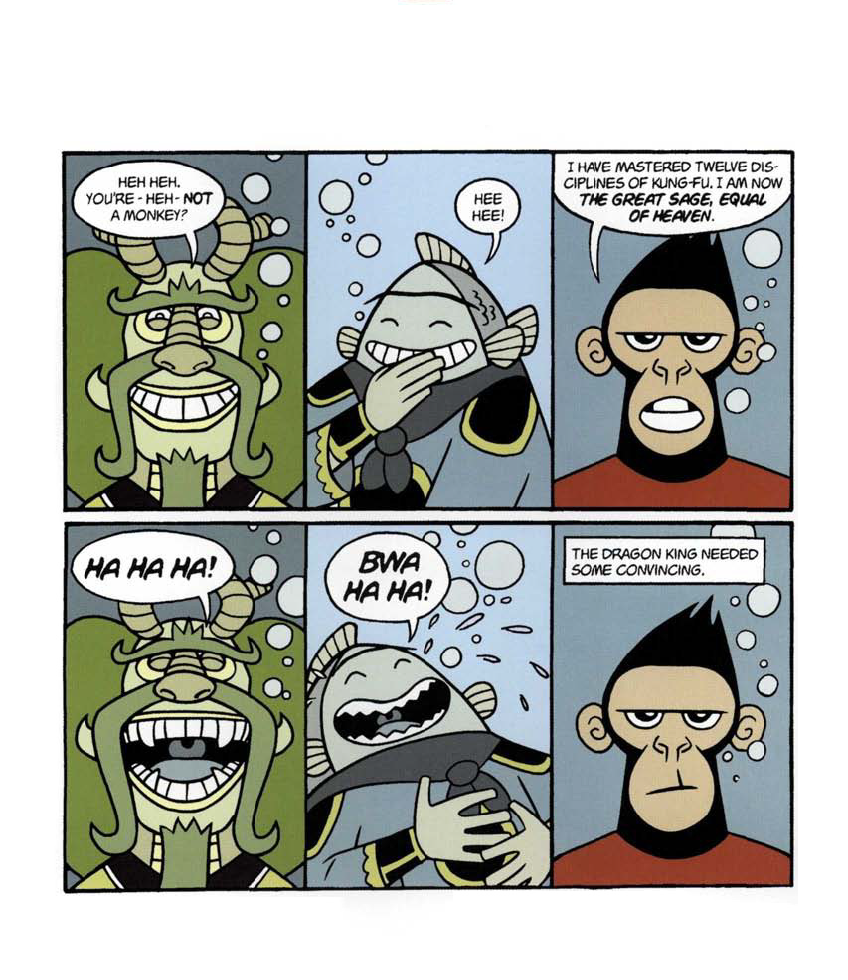
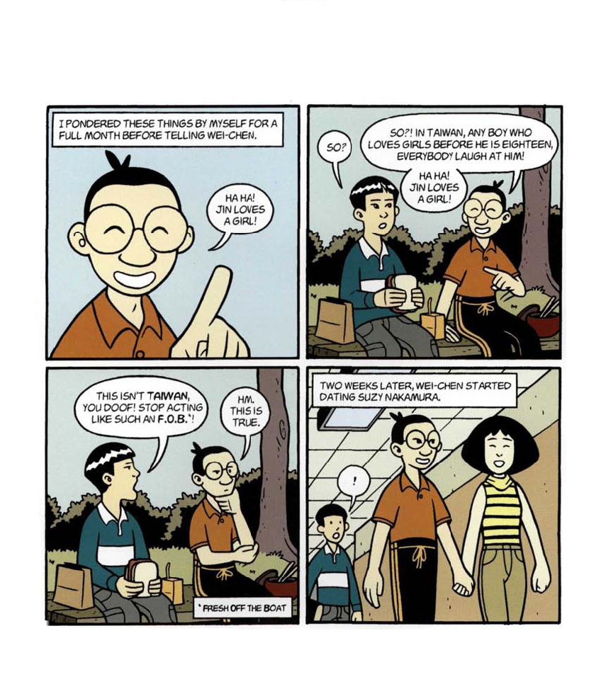
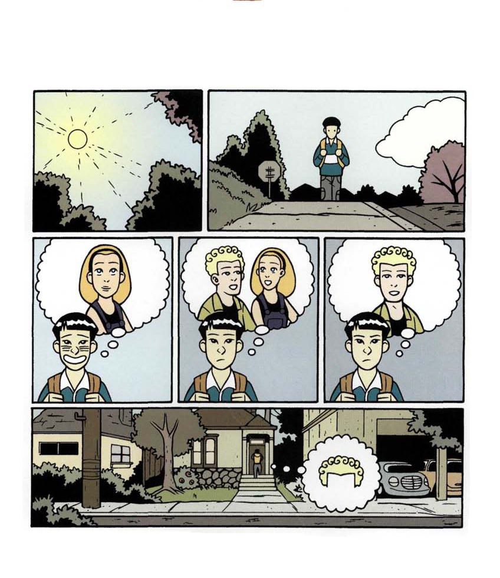
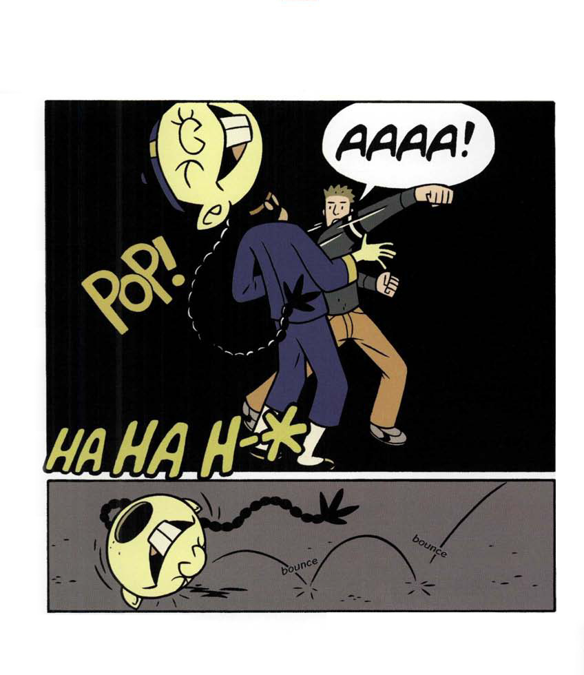
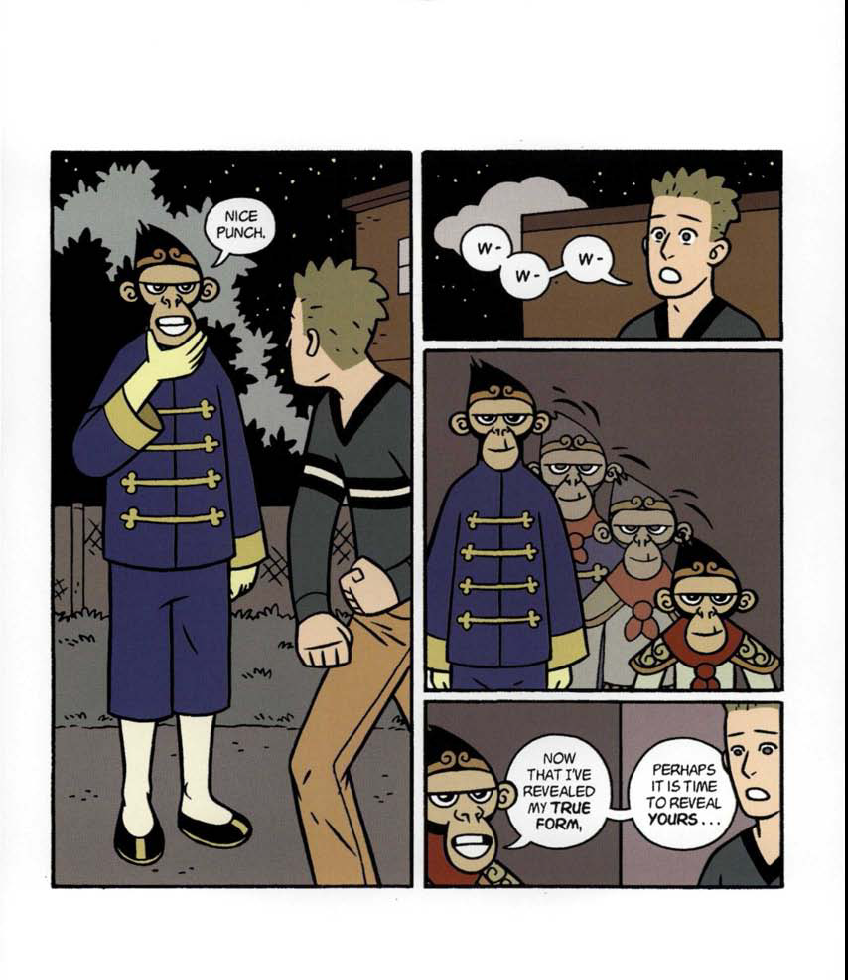

American Born Chinese
By: Gene Luen Yang
Page 1
Page 2
This page intentionally left blank.
Page 3
Page 4
Page 5
Page 6
This page intentionally left blank.
Page 7
Description of panels on page 7
Description: One bright and starry night, the gods, the goddessess the demons, and the spirits gathered in heaven for a dinner party.
Lao-Tzu: Your peaches are looking especially plump today, my dear!
Woman: Tee hee! Oh stop it, Lao-Tzu!
Large chicken: I don't mean to boast, but that thunderstorm I put together last night impressed even myself!
Page 8
Description of panels on page 8
Description: Their music and the scent of their wine drifted down...
...Down...
...Down...
...to Flower-Fruit Mountain...
...Where flowers bloomed year-round...
...And fruits hung heavy with nectar...
...And monkeys frolicked under the watchful eye of the magical monkey king.
Now the monkey king was a deity in his own right.
Page 9
Description of panels on page 9
Description: Legend had it that long ago, long before almost any monkey could remember, the monkey king was born of a rock.
When his eyes first opened, they flashed rays of light deep into the sky.
All of heaven took notice.
Speech bubble coming from a palace: What the-?
Soon after, he purged flower-fruit mountain of the tiger-spirit that had haunted it for centuries.
He established his kingdom and monkeys from the four corners of the world flocked to him.
Page 10
Description of panels on page 10
Description: The monkey king ruled with a firm but gentle hand.
Monkey King: Play nice.
Description: He spent his days studying the arts of kung fu. He quickly mastered thousands of minor disciplines as well as the four major heavenly disciplines, prerequisites to immortality.
Discipline one: fist-like-lightning
Discipline two: thunderous foot
Page 11
Description of panels on page 11
Description: Discipline three: heavenly senses Monkey king: A dinner party! Description: The monkey king liked dinner parties very much. Monkey king: My dear subjects, I must take leave of you tonight for there is a very important party I must attend. Monkey king's subjects: Awww... Description: Discipline four: cloud-as-steed
Page 12
Description of panels on page 12
Description: The monkey king waited in line for what seemed like an eternity.
He fidgeted this way and that (monkeys just aren't very good at waiting) but forced himself to stay in line.
All the while he thought about how much he liked dinner parties.
Page 13
Description of panels on page 13
Description: By the time the monkey king arrived at the front gate, he was beside himself with anticipation.
Guard: Announcing the arrival of Ao-Jun, the dragon king of the western sea!
*Ahem* Pardon me sir, but might you step this way for a moment?
Monkey king: Oh, I'm sorry-
You may announce that I am the monkey king of the flower-fruit mountain!
Guard: Yes, yes. I apologize profusely sir, but I cannot let you in-
Page 14
Description of panels on page 14
Guard: -you haven't any shoes.
Monkey king: But there must be some mistake! I am the sovereign ruler of flower-fruit mountain, where the flowers bloom year-round and the fruits hang heavy with nectar!
Thousands of subjects pledge loyalty to me.
Guard: Good for you, sir, good for you! Now if you'll kindly step aside-
Monkey king: You don't understand!
Monkey king: I, too, am a deity! I am a committed disciple of the arts of Kung-Fu and I have mastered the four major heavenly disciplines, prerequisites to immortality!
Page 15
Description of panels on page 15
Guard: That's wonderful, sir, absolutely wonderful! Now please, sir-
Monkey king: I demand to be let into this dinner party!
Guard: Look. You may be a king- you may even be a deity- but you are still a monkey.
Guard: Have a good evening, sir.
Description: The monkey king was thoroughly embarassed.
He was so embarrassed, in fact, that he almost left without saying a word.
Page 16
Description of panels on page 16
Description: But on second thought, he decided that perhaps saying one word would make him feel better.
Monkey king: DIE!
Page 17
Page 18
Page 19
Page 20
Description of panels on page 20
Description: The monkey king couldn't stop shaking as he descended on flower-fruit mountain.
Description: When he entered his royal chamber, the thick smell of monkey fur greeted him.
He'd never noticed it before.
Description: He stayed awake for the rest of the night thinking of ways to get rid of it.
Page 21
Page 22
This page intentionally left blank.
Page 23
![Panel 1: a boy, with a tear rolling down his cheek, is holding an action figure of a robot and sitting in the back seat of a car. Panel 2: a man and woman are sitting in the front seat of the car, and a stack of boxes are next to the boy in the back seat. Panel 3: a different young boy is holding a bundle of sticks and talking with another person, while an elderly woman looks on in the background. Panel 4: the young boy is burning incense sticks and praying, while the elderly woman carries a filled basket in the background.](./images_extract/Page_24.png)
Description of panels on page 23
Description: My mother once told me an old chinese parable.
Mother: <Long ago, a mother and her young son lived near a marketplace.>*
Description: *Translated from modern chinese.
Description: <Every day when the son played, he pretended to buy and sell sticks he found on the street, haggling over prices with his friends.>
<The mother decided to move.>
Description: <They settled into a house next to a cemetery. Now when the son played he burned incense sticks and sang songs to dead ancestors.>
<The mother decided to move again.>
Page 24
Description of panels on page 24
Mother: <She found a home across the road from a university. The son now spent all his free-time reading books about mathematics, science, and history.>
Mother: <The mother and her son stayed there for a long, long time.>
Description: She finished the story as we pulled up to our new house.
Page 25
Description of panels on page 25
Description: My parents arrived in America at the same airport within a week of each other.
Description: Ironically, they didn't meet until a year and a half later, in the library of San Francisco State university. They were both graduate students.
Description: For tuition money, my mother worked at a cannery.
My father sold wigs door-to-door.
Description: Eventually, my father became an engineer and my mother a librarian. Just before I was born, they moved into an apartment near San Francisco Chinatown. We stayed there for nine years.
Page 26

Description of panels on page 26
Description: There was a group of boys around my age that lived in the same complex.
Description: They came over on saturday mornings to watch cartoons. (Our apartment, being on the top floor, had the best reception.)
Boy 1: <No, Megatron!>
Boy 2: <Don't do it!>
Description: Afterwards, we would stage epic battles that left our toys smelling like spit.
Boy 1: Ptak! Ptak!
Boy 2: Ptew! Ptew! Ptew!
Boy 3: Pow!
Boy 4: FRWWT!
Page 27
Description of panels on page 27
Description: Every Sunday mother used to visit the Chinese herbalist just around the cordner for her allergies. She would always take me along.
Sometimes the appointment lasted for what seemed like hours. I would sit in the front room listening to the herbalist's wife calculate bills on her abacus.
Description: One sunday, when business was especially slow and I was especially bored, the herbalist's wife asked,
Herbalist's wife: <So little friend, what do you plan to become when you grow up?>
Boy: <...well... ...I...I want to be a> Transformer!
Herbalist's wife: ..."Trans- fo- ma?"
Page 28
Description of panels on page 28
Boy: <Yeah!> A robot in disguise! <Like this one!>
Boy: < He changes into a truck...>
Boy: < ...See?> more than meets the eye!
Boy: < In the cartoon, he's also got a trailer that magically appears whenever he transforms, but on the toy it's a seperate piece.>
Herbalist's wife: < So you want to be a...a...> "Trans-fo-ma," < Huh? >
Boy: < Yeah...but ma-ma says that's silly. Little boys don't grow up to be > Transformers.
Herbalist's wife: < Oh, I wouldn't be so sure about that. I'm going to let you in on a secret, little friend:>
Page 29
Description of panels on page 29
Herbalist's wife: < It's easy to become anything you wish...> <...so long as you're willing to forefit your soul.>
Page 30
Description of panels on page 30
On the morning after we arrived, with the scent of our old home still lingering in my clothes, I was sent off to Mrs. Greeder's third grade at Mayflower Elementary school.
Mrs. Greeder: CLass, I'd like us all to give a warm Mayflower Elementary welcome to your new friend and classmate Jing Jang!
Jin Wang: Jin Wang.
Mrs. Greeder: Jin Wang!
Mrs. Greeder: He and his family recently moved to our neighborhood all the way from China!
Jin Wang: San Francisco.
Mrs. Greeder: San Francisco!
Page 31
Description of panels on page 31
Mrs. Greeder: Yes, Timmy.
Timmy: My momma says Chinese people eat dogs.
Mrs. Greeder: Now be nice, Timmy! I'm sure Jin doesn't do that! In fact, Jin's family probably stopped that sort of thing as soon as they came to the United States!
The only other Asian in my class was Suzy Nakamura.
When the class finally figured out that we weren't related, rumors began to circulate that Suzy and I were arranged to be married on her thirteenth birthday.
We avoided each other as much as possible.
Page 32
![Panel 1, 2, 3: Children playing at recess. Panel 4: Jin eating lunch alone on a long empty table. Panel 5: Timmy says something with a disgusted look on his face. A boy with light brown hair and a zoned out look on his face stands to the left, and a boy with curly blonde hair and a surprised look on his face stands to the right. Panel 6: Jin says something while holding a dumpling in his chopsticks. Meanwhile Timmy sniffs the food. Panel 7: Timmy says something with a disturbed look on his face. The boy with brown hair laughs. The boy with blonde hair glares and says something to the other boys.](./images_extract/Page_33.png)
Description of panels on page 32
Timmy: What the hell is that?!
Jin: Dumplings.
Timmy: Hmph. Stay away from my dog.
Boy with brown hair: Ha!
Boy with blonde hair: Hey, be cool, man.
Page 33
![Panel 1: Timmy looks angrily at the boy with blonde hair and says something while the boy with brown hair looks at Timmy. Panel 2: The boy with blonde hair replies to Timmy angrily. Timmy looks frightened, and the boy with brown hair looks at the boy with blonde hair. Panel 3: Timmy responds shyly, looking away. The boy with blonde hair glares and says something to Timmy. Timmy says something. The boy with brown hair is watching. Panel 4: The three boys walk away while Timmy turns his head to say something to Jin with his arms around the boys. The boy with brown hair turns to say something. The boy with blonde hair has his back turned. Panel 5: The boy with blonde hair turns and looks at Jin. Panel 6: Jin looks at the boy with blonde hair with his chopsticks in his lunchbox.](./images_extract/Page_34.png)
Description of panels on page 33
Timmy: Aw, don't get yer panties in a bunch, Greg! Little pansy-boy.
Greg: What did you call me?!
Timmy: little pansy boy.
Greg: WHAT?!
Timmy: ...Nothin', nothin'.
Timmy: Come on, let's leave bucktooth alone so he can enjoy Lassie.
Boy with brown hair: Ha ha! "bucktooth!"
Page 34
Description of panels on page 34
About three months later, I made my first friend at Mayflower Elementary: Peter Garbinsky, he was a fifth grader.
Everyone called him "Peter the eater."
He introduced himself to me during recess one day.
Peter: Gimmer yer sandwich and I'll be your best friend.
Peter: Otherwise I'll kick your butt and make you eat my boogers.
My friendship with Peter developed quickly.
We had a number of favorite games-
Page 35
Description of panels on page 35
-"Kill the Pill"-
-"Crack the Whip"-
-And "Let's be Jews." We usually had to steal an item or two from Mrs. Garbinsky's dresser drawer for this game.
Peter: Har! Jin, you're such a friggin' riot!
Just before winter break during my fifth grade year (Peter was in sixth), Peter told me he was going to visit his father in Penslyvania. "The friggin government finally came to its friggin' senses," he said.
When winter break was over, Peter never came back.
Page 36
![Panel 1: An old teacher with short gray hair, a mustache, glasses, and a blue shirt and tie says something with his hand on a new student's shoulder. The student is a short Asian boy with round glasses and black hair tied into a small bun at the top. The boy says something and the teacher says something. Panel 2: The teacher says something with a smile and the boy says something with a glare. The teacher says something. Panel 3: Jin is sitting at his desk in class with a very subtle scowl on his face.](./images_extract/Page_37.png)
Description of panels on page 36
Two months later, Wei-Chen arrived.
Teacher: Class, I'd like us all to give a big Mayflower Elementary welcome to your new friend and classmate Chei-Chen-Chun!
Boy: Wei-Chen-Sun.
Teacher: Wei-Chen-Sun!
Teacher: He and his family recently moved to our neighborhood all the way from China!
Wei-Chen: Taiwan.
Teacher: Taiwan!
Something made me want to beat him up.
Page 37
Description of panels on page 37
Wei-Chen: <Sorry to bother you, but you're Chinese, aren't you?
Jin: You're in America. Speak English.
Wei-Chen: ...eh...
...you- you- Chinese person?
Jin: Yes.
Page 38
Description of panels on page 38
Wei-Chen: ...eh... We- b- be friend?
Jin: I have enough friends.
Wei-Chen: ...sorry? Repeat, please?
Jin: I have enough friends.
Wei-Chen: ...eh... who?
Jin: Them.
We-Chen: Oh.
Page 39
Description of panels on page 39
Wei-Chen: *Sigh.*
Jin: <What is that?>
Wei-Chen: <A toy robot.>
Wei-Chen: <He can change into a robot monkey.>
Wei-Chen: <My father gave it to me just before I left as a good-bye present.>
Page 40
Description of panels on page 40
Jin: <Can I see it?>
Wei-Chen: <Sure.>
Description: Over the next few months, Wei-Chen became my best friend.
Page 41
Page 42
This page intentionally left blank.
Page 43
Description of panels on page 43
Logo text: "Everyone Ruvs Chin-Kee" Below panel: clap clap clap clap clap...
Page 44
Page 45
Description of panels on page 45
Girl: Van der Waals forces of atraction are stronger when more of what are present?
Boy: mmm.
The words "ha ha ha" are across the bottom of the panel, suggesting the scene takes place in a sitcom.
Girl: Danny, you're drooling.
Boy (Danny): What?! Oh! Well, I- that happens when I'm really concentrating on your- I mean- chemistry.
Girl: Will you please stop fooling around? If we don't get this attraction stuff down by tomorrow-
Danny: You know, Melanie, since we're on the topic of attraction, I've been meaning to talk to you about something...
Page 46
Description of panels on page 46
Girl (Melanie): ... I've actually been hoping-
Voice coming from out of frame: Danny!
Danny: *sigh.* Hold that thought. Yeah, ma?!
Voice from out of frame (Danny's Mother): I have some exciting news! Guess who's coming to visit!
Danny: Who?
Danny's Mother: Your cousin Chin-Kee!
Page 47
Description of panels on page 47
Danny's Mother: I knew you'd be excited!
Danny's Mother: Your father went to go pick him up at the airport! He should be here any minute now!
Melanie: Danny, who's cousin Chin-Kee?
Page 48

Description of panels on page 48
Chin-Kee: Harro Amellica!
Danny's father: I'll put your luggage into your room, Chin-Kee.
Laughter and clapping are visible across the bottom of the panel, again suggesting we are watching a sitcom.
Page 49
Description of panels on page 49
Chin-Kee: Cousin Da-nee!
Chin-Kee: Rong time no see! Chin-Kee happy as ginger root pranted in nutritious manure of well-bred ox!
Danny: ... Hi Chin-Kee.
Page 50
Description of panels on page 50
Chin-Kee: What--?! Confucius say, "hubba-hubba!"
Chin-Kee: Such pletty Amellican girl wiff bountiful Amellican bosom! Must bind feet and bear Chin-Kee's children!
Page 51
Description of panels on page 51
Danny's mom: Chin-kee? Is that you out there?
Danny: ...
Chin-kee: Oh no! Chin-kee so solly, so vely solly! Dis pletty Amellican girl wiff bountiful Amelican bosom must berong to cousin Da-nee!
Chin-kee: Perhaps chin-kee can find pletty Amellican girl for hisself when he attend Amellican school tomorrow wiff cousin Da-nee!
Danny: ...?! Ma?!
Danny's mom: Oh, you two are going to have so much fun together!
Page 52
Page 53
Page 54
This page intentionally left blank.
Page 55
Description of panels on page 55
The morning after the dinner party the monkey king issued a decree throughout all of Flower-Fruit mountain:
All monkeys must wear shoes.
Page 56
Description of panels on page 56
The Monkey King also ordered that he not be disturbed.
He locked himself deep down in the inner bowels of his royal chamber, where he studied kung-fu more fervently than ever.
He spent his days training.
He spent his nights meditating.
He ate and drank nothing.
Page 57
Description of panels on page 57
Description: After forty days, he achieved the four major disciplines of invulnerability.
Discipline one: invulnerability to fire
Description: Discipline two: invulnerability to cold
Description: Discipline three: invulnerability to drowning
Description: Discipline four: invulnerability to wounds
Page 58

Description of panels on page 58
Description: After another forty days, he achieved the four major disciplines of bodily form.
Discipline one: giant form
Description: Discipline two: miniature form
Description: Discipline three: hair-into-clones
Description: Discipline four: shape shift
Page 59

Description of panels on page 59
Monkey 1: Look! Our king emerges from his royal chamber!
Monkey 2: Yay! We can once again frolic under his protection!
Monkey 1: Your majesty looks different somehow...
Monkey 2: Sire, on the first night of your seclusion, the winds carried this down from heaven.
Monkey king: ...
Monkey 1: New haircut?
The letter reads:
Monkey King - You are hereby convicted of tresspassing upon Heaven. Your sentence is death. Report immediately to the Underwater Palace of Ao-Jun, Dragon King of the Western Sea, for your execution.
Monkey king: This notice is a mistake.
Page 60

Description of panels on page 60
Monkey king: This "monkey king" it speaks of no longer exists, for I have mastered twelve major disciplines of kung-fu and transcended my former title!
I shall now be called-
-The Great Sage, Equal of Heaven!
Monkey 1: Would your majesty like a banana?
Monkey 2: Yummy banana!
Monkey king: ...
Page 61
Description of panels on page 61
Monkey 1: Sire? Where are you going?
Monkey king (now the great sage): To announce my name to all of heaven.
Those shoes must be worn on you feet, little one.
Monkey with shoes on his ears: Awww...
Description: Ao-Kuang, dragon king of the eastern sea, was the first to receive the great sage as a visitor.
Ao-Kuang: Ah. The infamous monkey king. I've been anxiously awaiting your arrival.
...though you're a bit taller than I'd imagined.
Page 62
Description of panels on page 62
Ao-Kuang: My apologies for not sending someone to arrest yout in person, but frankly none of the gods wanted to go anywhere near your mountain.
Nothing personal - we just aren't particularly fond of fleas.
Now let's get this over and done with, shall we? Guard!
Great sage: Sir - this execution - is no longer necessary.
Ao-Kuang: Wha?! Impressive parlor trick, little monkey!
Grat sage: I am not a monkey.
Page 63
Description of panels on page 63
Ao-Kuang: Heh heh. You're - heh - not a monkey?
Guard: Hee hee!
Great sage: I have mastered twelve disciplines of kung-fu. I am now the Great Sage, equal of heaven.
Ao-Kuang: Ha ha ha!
Guard: Bwa ha ha!
Description: The dragon king needed some convincing.
Page 64
Description of panels on page 64
Description: The great sage decided to perform for him the discipline of giant form.
Ao-Kuang and guard: Ha ha ha!
Description: The dragon king was convinced.
Page 65
Description of panels on page 65
Description: As a parting gift, the dragon king gave the great sage a magic cudgel that could grown and shrink with the slightest thought.
Description: the great sage then visited Lao-Tzu, patron of immortality...
Lao-Tzu: Ha ha ha!
Description: ...Yama, care-taker of the underworld...
Yama: Tee hee!
Description: ...and The Jade Emperor, ruler of the celestials.
Jade emperor: Haw haw haw!
Page 66
Description of panels on page 66
Description: All of them needed convincing.
Description: For Lao-Tzu, the great sage performed the discipline of shape shift...
Description: ...for Yama, the discipline of hair-into-clones...
Description: ... and for the jade emperor, he demonstrated the wonders of his new cudgel.
Page 67
Description of panels on page 67
Description: Soon after, the gods, the goddesses, the demons, and the spirits gathered before the lion, the ox, the human, and the eagle, emissaries of Tze-YoTzuh.*
*"He who is"
The jade emperor: Please! You must ask him to do something!
Yama: This monkey will be the death of us!
The Lion: We will relay your request.
Page 68
Description of panels on page 68
Great sage: *Twak!* What's my name?!
Smaller god: The great sage, equal of heaven!
Great sage: *Twak!* What's my name?!
Smaller god: The great sage, equal of heaven!
Great sage: *Twak!* What's my name?!
Smaller god: The great sage, equal of heaven!
Off panel voice: Little monkey, where does your anger come from?
Great sage: I am not-
Great sage: -a monkey...
Page 69
Description of panels on page 69
god: Silly little monkey.
Great sage: You were saying?
god: I created you, I say that you are a monkey. Therefore you are a monkey.
Great sage: You are mistaken. I was born of a rock, created by no one.
Page 70
Description of panels on page 70
god: It was I who formed you within that rock.
Great sage: Prove it.
god: I am Tze-Yo-Tzuh. all that I have created- all of existence- forever remains within the reach of my hand. You I have created. Therefore, you can never escape my reach.
Great sage: Watch me.
Page 71
Description of panels on page 71
Great sage: Ha! Too easy!
Great sage: !
The Great sage flew with as much fury as he could muster.
Page 72
Description of panels on page 72
He flew past the planets and the stars.
He flew past the edges of the universe.
He flew through the boundaries of reality itself.
Great sage: *huff huff*
Page 73
Description of panels on page 73
There, at the end of all that is, the great sage came upon five pillars of gold.
Page 74
Description of panels on page 74
Never one to miss out on a chance for recognition, the great sage carved his name into one of the pillars.
Page 75
Description of panels on page 75
The he relieved himself. (It had been an awfully long trip.)
Page 76
Page 77
Description of panels on page 77
Great sage: I just flew through the boundaries of reality itelf, and where was your 'ever present reach'?
Great sage: Nowhere!
Great sage: Ha! Of all the gods I've encountered, you are by far the most pitiable.
Tze-Yo-Tzuh: Come closer, little monkey, and take a look at my hand.
Page 78
Description of panels on page 78
The five pillars of gold you found at the end of all that is- those were the five fingers of my hand.
Page 79
Description of panels on page 79
Tze-Yo-Tzuh: Walk with me.
Page 80
Description of panels on page 80
Tze-Yo-Tzuh: I am Tze-Yo-Tzuh. I was, I am, and I shall forever be. I have searched your soul, little monkey. I know your most hidden thoughts. I know when you sit and when you stand, when you journey and when you rest. Even before a word is upon your tongue, I have known it. My eyes have seen all your days.
Tze-Yo-Tzuh: Where do did you think you could hide from me? Where can you flee from my presence?
Tze-Yo-Tzuh: I am in the heights of heaven-
Tze-Yo-Tzuh: -And the depths of the under world.
Tze-Yo-Tzuh: Even at the end of all that is, my hand is there, holding you fast.
Tze-Yo-Tzuh: It was I who formed your inmost being, I who knit you together in the womb of that rock. I made you with awe and wonder, for wonderful are all of my works.
Page 81

Description of panels on page 81
Tze-Yo-Tzuh: I do not make mistakes, little monkey. A monkey I intended you to be. A monkey you are.
Tze-Yo-Tzuh: Please accept this and stop your foolishness.
Great sage: I don't care who you say you are, old man. I can still take you.
Tze-Yo-Tzuh: *sigh*
Page 82
Page 83
Page 84
Description of panels on page 84
Tze-Yo-Tzuh buried the monkey king under a mountain of rock and set a seal over him to prevemt him from exercising kung-fu.
The monkey king stayed there for five hundred years.
Page 85
Page 86
This page intentionally left blank
Page 87
![Panel 1: Jin sits at his desk in class with his hand on his chin, looking bored. Meanwhile, a girl sitting one row in front of him with blonde hair and blue eyes wearing a purple cardigan and a black shirt underneath fans herself with a piece of paper. Panel 2: The girl unties her cardigan, and Jin raises one eyebrow as he looks over at her. Panel 3: From Jin's perspective, the blonde girl removes her cardigan. Panel 4: Jin's eyes are wide and his mouth is slightlty open. Panel 5: The blonde girl is looking at the board and taking notes wearing the black tank top and navy blue overalls. Meanwhile, Jin is looking at her with wide eyes and an open mouth.](./images_extract/Page_88.png)
Description of panels on page 87
Even though we'd been in school together since the third grade, I never noticed Amelia Harris until one humid afternoon in Mr. Kirk's seventh grade english class.
*Zing!*
Life was never the same again.
Page 88
Description of panels on page 88
From then on, she became a tangible presence in my life. Whenever she entered the room I was aware of her, even if I wasn't looking directly at her.
Jin: It took me all night to get this stupid thing to w-w-w-
Jin: Woah...
Wei-Chen: Jin? You okay?
It made me nervous that someone could have that much power over me without even knowing it.
I would lie awake at night analyzing my feelings for her. She wasn't exceptionally beautiful and she spoke with a slight lisp.
But when she smiled...
Jin: Huh huh
Page 89
Description of panels on page 89
I pondered these things by myself for a full month before telling Wei-Chen.
Wei-Chen: Ha ha! Jin loves a girl!
Jin: So?
Wei-Chen: So?! In Taiwan, any boy who loves a girl before he is eighteen, everybody laugh at him! Ha Ha! Jin loves a girl!
Jin: This isn't Taiwan, you doof! Stop acting like such an F.O.B!
*Fresh off the boat*
Wei-Chen: Hm. This is true.
Two weeks later, Wei-Chen started dating Suzy Nakamura.
Jin: !
Page 90
![A thin teacher with fluffy gray hair and a gray mustache peers into a tank that holds a green lizard with eyelash extentions and lipstick. Panel 2: The teacher says something to the class with his arms crossed. Panel 3: The teacher says something off panel. There is a lizard, chimpanzee, and white rabbit, all wearing makeup in their respective containers sitting on the teacher's desk at the front of the classroom. Panel 4: The teacher says something with his hands clasped together. Panel 5: A girl replies to the teacher with a smile and a thumbs up. She has blonde hair, big green earrings, and a black tank top under a green shoulderless top. She is wearing heavy mascara with green eye shadow and a thick layer of lipstick that has dried and caked up. She also has long black press-on nails.](./images_extract/Page_91.png)
Description of panels on page 90
Teacher: Look at its eyes...so cold and still...almost lifeless.
Teacher: I've named her Clarissa, after my ex-wife.
Class: Ha Ha
Teacher: Clarissa and her friends are on loan to us from Babelene Cosmetics, Inc. This is a truly wonderful and unexpected learning opportunity for us, class!
Teacher: I hope you all take advantage of it!
Teacher: Mabel, you really must say thank you again to your mother.
Mabel: Will do, Mr. Graham!
Page 91
Description of panels on page 91
Mr Graham: Now, for the duration of their visit Clarissa and company will need two student caretakers. Your duties will include staying after school to feed them and change their water.
Mr Graham: There will, of course, be extra credit involved. Any volunteers?
Mr Graham: Thank you, Amelia. Anyone else?
Timmy: What for, Amelia? You can pet my lizard any time you want.
Amelia: Timmy-!
Greg: I don't know, Timmy. You do a pretty good job of that yourself.
Amelia: Ha ha!
Page 92
Description of panels on page 92
Wei-Chen (whispering): Now is a chance for your lifetime, Jin! Raise your hand!
Jin (whispering): Shut up, Wei-Chen! I am not gonna-
Wei-Chen (whispering): Don't be such a cowardly turtle! Raise your hand!
Mr Graham: Wei-Chen, are you volunteering?
Wei-Chen: Uh... in actuality, Mr. Graham, Jin would-
Mr. Graham: Wei-Chen. If you aren't volunteering-
-then why are you making so much noise back there?
Page 93
Description of panels on page 93
Wei-Chen: *sigh.* Yes, Mr. Graham, I would love very much to volunteer.
Mr. Graham: Thank you, Wei-Chen.
Page 94
Description of panels on page 94
Jin: You think she likes him?
Wei-Chen: Sorry Jin, please say again? Suzy and I were looking at each other with eyes of love.
Suzy: Ha ha!
Jin: I was asking- before the two of you almost made me puke- do you think Amelia likes Greg?
Suzy: Greg ...?
Jin: Greg, that guy who sits next to her in science.
Suzy: Come on, Jin. Don't be so paranoid. They were just talking!
Wei-Chen: But talking is more than he has ever done. Because he is a little cowardly turtle.
Jin: Shut up. I've talked to her before.
Suzy: You know, I could be wrong-
-But I don't think dropping your books in front of her and then giggling to yourself counts as conversation.
Wei-Chen: No, wait, Suzy! What he say is true! Remember last week in science?
Page 95
Description of panels on page 95
Suzy: That's right! How could I forget?!
Wei-Chen: Yes! Instead of walking behind her table as usual, Jin bravely walk right in front of Amelia to get is lab materials-
Suzy: -Only to knock over half the test tubes along the counter!
Wei-Chen: And when Amelia help him to pick up the broken glass, Jin point to test tubes still on the counter and say-
Suzy and Wei-Chen: "Huh huh, at least I didn't rake the breast."
Suzy and Wei-Chen: Ha ha ha ha ha ha ha!
Wei-Chen: Even I don't make such a mistake!
Page 96
Description of panels on page 96
Jin: You- you- you guys suck.
Wei-Chen and Suzie: Ha ha ha!
Boy 1: Hey, I chink it's getting a little
Boy 2: You're right! I'm gettin' gook bumps!
Page 97
Page 98

Description of panels on page 98
Suzy: ...
Wei-Chen: ...
Suzy: ...Jin?
Jin: What?
Wei-Chen: Whay is your hair- mmph
Suzy: Nothing! Nice perm!
Jin: Thanks! See you guys at lunch.
Suzy: Yeah! See ya!
Suzy: Be nice! He's your best friend!
Wei-Chen: Why is his hair a broccoli?!
Page 99
Description of panels on page 99
Monkey: Ook ook eek!
Amelia: She seems awfully attracted to you.
Wei-Chen: In actuality, it is a he.
Amelia: How do you know?
On second thought, I don't really want to know the answer to that.
Amelia: So this thing eats pinky mice, huh?
Wei-Chen: That is what Mr. Graham say.
Amelia: I think the're in the back closet. Would you mind getting them?
Wei-Chen: Sure.
Amelia: I'm really glad you're here with me, Wei-Chen. There's just no way I could do this by myself. Something about little, pink, furless mice...
Eeech.
I wouldn't be able to deal.
Page 100
Description of panels on page 100
Wei-Chen: Where are the pinky mice?
Amelia: They should be in there. Did you check behind that big box of bunsen burners?
Wei-Chen: Yes, I look already.
Amelia: How about behind the door?
Amelia: See? Here they are.
Amelia: Uh, Wei Chen?
Wei-Chen: Yes?
Amelia: How come there's no door knob on this side of the door?
Page 101
Description of panels on page 101
Amelia: *sigh.*
Amelia: I can't believe how lame this is. Isn't it illegal or something for them to have doors like that on campus?
Wei-Chen: Don't worry!
Wei-Chen: I was supposed to meet a friend of mine Jin after school. He can figure out we are here.
Amelia: Jin? That asian boy with the afro?
Wei-Chen: Yes, yes- him.
Amelia: You're pretty good friends with him, aren't you?
Wei-Chen: Yes, Jin is my very best friend. I owe Jin very much.
Amelia: What do you mean?
Page 102
Description of panels on page 102
Wei-Chen: When I move here to America, I was afraid nobody wants to be my friend. I come from a different place. Much, much different.
But my first day in school here I meet Jin. From then I know everything's okay. He treat me like a little brother, show me how things work in America. He help with my english. He teach me hip english phrase like "Don't have a cow, man" and "word of your-" no, no...
"Work to your mother." Ha ha. He take me to McDonald's and muy me french fries. I think sometimes my accent embarass him, but Jin still willing to be my friend. In actuality, for a long, long time my only friend is him.
We-Chen: Yes, I owe Jin very much. He has a good soul.
If he was not here, I don't know. I would have been so lonely.
Amelia: Can I ask you something, Wei-Chen?
Wei-Chen: Shoot away.
Amelia: I've always goten this weird vibe from Jin...
Amelia: Does he... like me or something?
Wei-Chen: Ha ha! You yourself ask him!
Page 103
Description of panels on page 103
Description (Jin): I waited for Wei-Chen for almost an hour before figuring it out.
Jin (thought bubble): What's taking him so long? He couldn't've gone to math circles- it's wednesday!
Description (Jin): It took me another fifteen minutes to convince Mr. McGroul to open the biology room for me.
Mr. McGroul (janitor): No way. Those animals in there give me the heebie-jeebies.
Description (Jin): I ended up owing him an hour of trash duty-
Mr.McGroul: -And an orange freeze from the cafeteria.
Description (Jin): I was worried.
Jin: Wei-Chen! You in here?!
Jin (thought bubble): All alone with Amelia?!
Description (Jin): Maybe a little jealous, too.
Page 104
Description of panels on page 104
Wei-Chen: Here we are! Inside the closet of supplies!
Description (Jin): I opened the supply closet as quickly as I could.
Description (Jin): Everything after that, for some reason, was a blur.
Description (Jin): I remember the way she looked up at me.
Description (Jin): I remember Wei-Chen whispering something in my ear.
Wei-Chen (whispering): Again is a chance for your lifetime!
Page 105
Description of panels on page 105
Description (Jin): I remember a jolt of confidence
Description (Jin): A stilted question.
Jin: Hang out... with me... sometime?
Description (Jin): And a word from her lips...
Amelia: Yes.
Page 106
Description of panels on page 106
Description (Jin): ...that kept me warm for the rest of the night.
Page 107
Page 108
This page intentionally left blank.
Page 109
Page 110
![Panel 1: Two silhouettes are standing outside of the glass doors leading into the school. One of them is tall and one of them is shorter. Panel 2: One of the silhouettes opens the door to the school and the other follows. Panel 3: Chin-Kee says something as he enters the school behind Danny. Danny says something with an annoyed look on his face. 'ha ha ha' is written across the bottom of the pannel repeatedly, indicating that Chin-Kee is laughing. Panel 4: Chin-Kee smiles and puts his hands in the air and says someting. Danny looks at Chin-Kee from the corner of his eye with an embarrassed look. 'ha ha ha' is written across the bottom of the pannel repeatedly, indicating that Chin-Kee is laughing.](./images_extract/Page_111.png)
Description of panels on page 110
Chin-Kee: Why cousin Da-nee bling Chin-Kee to school so rate? Other student arledy in crass!
Danny: Just hurry up. and stay quiet.
Chin-Kee: Ah so! What big, bootiful Amellican school! Chin-Kee rike! Chin-Kee rike vely much! Heh heh!
Page 111
![An old teacher with a balding head and gray hair wearing a black vest on top of a yellow collared shirt says something in front of a bored class. Panel 2: The teacher says something. Panel 3: Chin-Kee says something while he raises his hand and waves it. Danny looks stressed and embarrassed and whispers something to Chin-Kee. The teacher calls on Chin-Kee. 'ha ha ha' is written across the bottom of the pannel repeatedly, indicating that Chin-Kee is laughing. Panel 4: Chin-Kee says something then laughs. Panel 5: The teacher smiles and says something. Panel 6: Chin-Kee says something to Danny. Danny is sweating and looking very embarassed.](./images_extract/Page_112.png)
Description of panels on page 111
Teacher: Come on, people! Look alive! Didn't any of you do the assigned reading last night?!
Teacher: Let's try this one more time. The three branches of the American Government are...
Chin-Kee: Ooh ooh! Chin-Kee know dis one!
Danny: Put your hand down!
Teacher: Go ahead...ah, Chin-Kee, was it?
Chin-Kee: Judicial, executive, and regisrative!
Teacher: Good Chin-Kee! Very good! You know, people- it would behoove you all to be a little more like Chin-Kee.
Chin-Kee: See, cousin Da-nee? Chin-Kee tol you! Chin-Kee know!
Page 112
![Panel 1: A teacher with long orange hair and glasses wearing a pink jacket and a black shirt underneath points to a world map with a stick and says something. Panel 2: Chin-Kee raises his hand and says something and laughs. Danny is sweating and looks embarassed. Panel 3: In a different class, an older balding teacher with a beard and glasses says something while holding the arm of a model skeleton. Panel 4: Chin-Kee raises his hand and says something and laughs. Danny is sweating and looks embarassed.](./images_extract/Page_113.png)
Description of panels on page 112
Female teacher: The Nina, the Pinta, and the-
Chin-Kee: -Santa Malia!
Older teacher: The ulna is connected to the-
Chin-Kee: -Humelus!
Page 113
Description of panels on page 113
Female teacher: R squared is greater than 6 R
Chin-Kee: L is less than or equal to zero or L is greater than or equal to six.
Male teacher: En esta historia, el perro de Jose es-
Chin-Kee: -Branco y muy glande!
Page 114
![Panel 1: The bell rings. Panel 2: Danny is sitting next to Chin-Kee with his arms crossed, looking annoyed. Chin-Kee is eating something with chop sticks. The people walking past them are whispering and pointing at Chin-Kee and Danny. Panel 3: Chin-Kee says something while holding up a box with a dead cat head in a bed of noodles. Danny says something. Chin-Kee laughs. There are 2 basketball players in the background covering their mouths as if they are about to vomit. Panel 4: A tall blonde boy with a flat top haircut holding a soda can and wearing a basketball jersey says something to Danny. Danny replies.](./images_extract/Page_115.png)
Description of panels on page 114
Chin-Kee: Would cousin Da-nee rike to tly Chin-Kee's clispy flied cat gizzards wiff noodle?
Background basketball players: I'm gonna hurl.
Danny: Leave me alone.
Tall blonde basketball player: Dan the man!
Danny: Steve!
Page 115
Description of panels on page 115
Steve: Hey, props on making the legendary Oliphant High Varsity basketball team, kid!
Danny: Come on, now. We both knew it was inevitable.
Steve: Well, being as how you're a transfer from Hughes Academy, I'd say it was anything but inevitable. What were you scrubs called again? The "water lilies?"
Danny: Oh, please. I've got a jump shot that'll make you cry like a sissy girl.
Steve: Ha ha. we'll see about that at practice today, kid.
Steve: So, ah... You hangin' with a new crowd?
Danny: No. This is my cousin, Chin-Kee.
Chin-Kee: Harro!
Danny: He's just visiting.
Page 116
Description of panels on page 116
Steve: So how long you in town for, Chin-
Danny: Hey, you... you happen to have an extra copy of the game schedule?
Steve: Why? Did you lose yours?
Steve: You know, I just might for a disorganized scrub like yourself.
Steve: Gimme a sec...
Steve: It's in here somewhere...
Page 117
Description of panels on page 117
Steve: Ah! It's your lucky day, kid!
Steve: There you go, that'll be $100, plus a date with your fly girlfriend. Oh wait- you don't have a fly girlfriend!
Danny: Ha ha. Thanks, man.
Steve: You gonna be at practice today?
Danny: How else am I gonna make you cry like a little sissy girl?
Steve: Ha ha. See you then, kid.
Danny: All right.
Steve: Oops! Almost forgot my coke.
Page 118
Description of panels on page 118
Chin-Kee: Hee
Hee hee
Chin-Kee: Ha ha ha ha ha ha ha!
Steve: What's your problem?!
Chin-Kee (whispering): Me Chinese, me play joke! Me go pee-pee in his coke!
Steve (out-of-panel): BLARF! What the heck's wrong with my coke?!
Page 119
Description of panels on page 119
Chemistry teacher: C3H8 + 5O2 equals
Chin-Kee: 3CO2 + 4H20
Drama teacher: O Romeo, Romeo!
Chin-Kee: Wherefore art dou Lomeo!
Page 120
Description of panels on page 120
Chin-Kee: Ah, as Confucius say, razy dog make for good stew.
Punishment is deserved. Chin-Kee tol' cousin Da-nee no come to school rate.
Chin-Kee: Ha ha! Dis day so fun, cousin Da-nee! Chin-Kee so run Amellican school!
Chin-Kee have such lorricking good time!
Chin-Kee: Now Chin-Kee go to Riblaly to find Amellican girl to bind feet and bear Chin-Kee's children!
Perhaps Cousin Da-Nee come too after detention!
Danny: Whatever.
Page 121
Page 122
Description of panels on page 122
Danny: Hey.
Melanie: Hey.
Danny: Listen, Melanie, I'm sooo sorry about all that stuff my cousin said-
Melanie: No. I shouldn't have left in a huff like that last night. It wasn't your fault.
I mean, in some ways it's kind of flattering.
Page 123
Description of panels on page 123
Danny: So does that mean you'd be up for catching a movie with me on Saturday?
Melanie: ...
I actually wanted to talk to you about that, Danny. We're good friends, and I really like being good friends.
Melanie: I don't want to do anything to mess that up.
Danny: I'm not like him, Melanie.
Melanie: What? This doesn't have anything to do with him!
Danny: I'm nothing like him! I don't even know how we're related!
Melanie: Calm down, Danny! Geez! This isn't about that, okay? It's about us being friends, and me not wanting to jeopardize that!
Danny: Whatever.
Page 124
Description of panels on page 124
Melanie: ...
You know, I never noticed it before, but your teeth kind of buck out a little.
Danny: They do?
Melanie: My uncle's an orthodontist. I've got his card in here somewhere.
Melanie: Give him a call. He'll be able to help you out.
Melanie: I'll see you around, okay?
Page 125
Description of panels on page 125
Steve: Hate to tell you this, kid, but practice ended twenty minutes ago.
Danny: I know. I had detention.
Steve: Too bad. You missed the three-pointer of the century-
-made my yours truly, of course.
Danny: Heh.
Steve: You all right, Danny?
Page 126
Description of panels on page 126
Danny: Can I tell you something, Steve?
Steve: Sure man, what's up?
Danny: You know how I transferred from Hughes Academy at the beginning of the year? Well, the year before that I transferred from Rhomer high.
I'm only a junior and I've already been to three different schools.
Steve: How come?
Danny: *Sigh.*
Every year around this time, I finally start getting the hang of things, you know? I've made some friends, gotten a handle on my schoolwork, even started talking to some of the ladies. I finally start coming into my own.
Danny: Then he comes along for one of his visits.
Steve: Who?
Danny: Chin-Kee. My cousin. He's been visiting me once a year since the eighth grade.
Page 127
Description of panels on page 127
Danny: He comes for a week or two and follows me to school, talking his stupid talk and eating his stupid food.
Embarassing the crap out of me.
Danny: By the time he leaves, no one thinks of me as Danny anymore. I'm Chin-Kee's cousin.
Danny: It gets so bad by the end of the school year that I have to switch schools.
Steve: Come on, kid. It ain't gonna go down like that here.
Danny: How do you know?
Page 128
Description of panels on page 128
Steve: People here aren't like that. No one ever says anything about my weight.
Steve: Well, maybe that's because I broke Todd Sharpnack's nose for calling me "Mr. Jiggles" when we were freshmen.
Steve: But whatever. People here are different. You'll see. Heck, if anyone ever gives you trouble, I'll break his nose.
Danny: Ha ha. You're probably right. Thanks, Steve
Steve: Come on, kid, I'll buy you a Coke.
Danny: A
Coke?
Danny: What, so I can pee in it?
Steve: That's what happened to my Coke?
He peed in it?
Page 129
Description of panels on page 129
Steve: BLAAAARGFFF!
Page 130
Page 131
Page 132
This page intentionally left blank.
Page 133
Description of panels on page 133
In all of antiquity, only four moks ever achieved legendary status
Page 134
Description of panels on page 134
The first was Chi Dao, who focused so singularly on his meditations that his body became stone.
The second was Jing Sze, who fasted for fourteen months, smirking in the face of death for the last three.
The third was Jiang Tao, whose sermons were of such eloquence that even the bamboo wept in repentance.
Bamboo: I'm so sorry! Boo-hoo!
The fourth was Wong Lai-Tsao, who was rather unremarkable by all accounts.
Page 135
Description of panels on page 135
Wong Lai-Tsao could not meditate for more than twenty minutes without developing an itch in his seat.
If he fasted for more than half a day, he would faint.
When he preached, he did not make sense.
Wong Lai-Tsao: It's as if your heart had a door on it, no, wait- perhaps it's more like an eye. No, hold on...
People in crowd: ?
But every morning, Wong Lai-Tsao would rise with the sun...
Page 136
Description of panels on page 136
...Gather fruit in a nearby orchard...
...And share it with the vagrants who lived just outside of town.
Vagrant woman: It's about time! I'm starving!
In the afternoon he would dress their wounds.
Vagrant with missing arm: Not so tight! What're you trying to do, make me lose my stump?!
And in the evening he would return home just as the sun was setting.
Vagrant: Try and get here on time tomorrow, you lazy bum!
Page 137
Description of panels on page 137
Wong Lai-Tsao did this faithfully day after day, year after year.
One afternoon, one of the vagrants asked,
Vagrant with missing arm: Tell me, monk, why do you come here day after day to feed us and dress our wounds?
Vagrant with missing eye: Are you too stupid to get a real job?
Wong Lai-Tsao: I am no more worthy of love than you, yet Tze-Yo-Tzuh loves me deeply and faithfully, providing for my daily needs. How can I not respond in kind?
Vagrant with missing arm: Good answer.
Page 138
Page 139
Description of panels on page 139
Voice: Do not be afraid, Wong Lai-Tsao!
Red lion: We are emissaries of Tze-Yo-Tzuh, he who was, is, and shall forever be. Tze-Yo-Tzuh has found favor with you.
Red lion: he has chosen you for a mission.
Goddess: You shall deliver three packages to the west. A star shall guide your way.
Eagle creature: Your journey will not be without peril. It is an old wive's tale among demons that the flesh of a holy man can grant eternal life. Once you are in the wilderness, many will try to eat you. Do you accept this mission, Wong Lai-Tsao?
Page 140
Description of panels on page 140
Wong Lai-Tsao: I accept whatever plans Tze-Yo-Tzuh has for me.
Goddess: Good answer.
Red lion: Tze-Yo-Tzuh has seen fit to provide you with three disciples. You shall gather them to yourself along your journey. They shall accpmpany you, protect you, and share your burden.
Red lion: The first of these is an ancient monkey deity, you shall find him imprisoned beneath a mountain of rock...
Page 141
Description of panels on page 141
The next morning, Wong Lai-Tsao rose with the sun and set off on his mission.
Page 142
Page 143
Description of panels on page 143
After forty days' journey, Wong Lai-Tsao finally camw upon the mountain of the monkey king.
Monkey king: ?
Wong Lai-Tsao: Dear disciple, please free yourself quickly, my arms are thin and weak, I cannot bear this burden alone much longer.
Page 144
![Panel 1: The monkey king says something to Wong Lai-Tsao angrily. Panel 2: Wong Lai-Tsao says soemething to the monkey king with an innocent face. Panel 3: The monkey king, with wide eyes, says something to Wong Lai-Tsao while pointing at himself with his thumb. Panel 4: The monkey king reaches out at Wong Lai-Tsao with 2 shaking hands. Wong Lai-Tsao leans away from the monkey king with a concerned look on his face. Panel 5: Wong Lai-Tsao says something to the monkey king. Panel 6: The monkey king says something with big angry eyes and gritted teeth.](./images_extract/Page_145.png)
Description of panels on page 144
Monkey king: Who are you to speak to me in such a manner? Do you not know who I am, mortal?!
Wong Lai-Tsao: You are the monkey Tze-Yo-Tzuh promised to me as a disciple.
Monkey king: You fool! I am the great sage, equal of heaven!
Monkey king: I am sovereign ruler of Flower-fruit mountain! Master of twelve major disciplines of kung-fu! Come closer so I can beat you for your impudence!
Wong Lai-Tsao: Please stop this nonesense, dear disciple. We must be on our way.
Monkey king: Are you too blind to see the mountain of rock that holds me to my place, you imbecile?!Even if I were willing to suffer the company of an ignoramus such as yourself, I would still be unable to leave!
Page 145
![Panel 1: Wong Lai-Tsao looks at the monkey king with patient eyes and says something. Panel 2: The monkey king says something to Wong Lai-Tsao with furious eyes while his hands shake before him. Panel 3: Shot of the seal with Chinese characters on the mountain. The monkey king says something off panel. Panel 4: Wong Lai-Tsao says something to the monkey king, maintaining his patient tone. Panel 4: The monkey king opens his mouth as if to say someething, pointing his finger up, but says nothing. Panel 6: The monkey king, with his finger still up, closes his mouth and glares, as if he has made a realization that he is not yet at peace with.](./images_extract/Page_146.png)
Description of panels on page 145
Wong Lai-Tsao: The form you have taken is not truly your own. Return to your true form and you shall be freed.
Monkey king: Is there no end to your stupidity,you sod?!
Monkey king: That seal above me prevents me from exercising kung-fu!
Wong Lai-Tsao: Returning to your true form is not an exercise of kung-fu, but a release of it.
Monkey king: ...
Page 146
Description of panels on page 146
Monkey king: Mortal, there are demons behind you.
Wong Lai-Tsao: Yes. I am aware of them. That is why I ask you to free yourself quickly.
Monkey king: And if I refuse?
Wong Lai-Tsao: If it is the will of Tze-Yo-Tzuh for me to die for your stubborness, then I accept.
Page 147
Description of panels on page 147
Monkey king: Ha! Then I shall enjoy watching the demons pick your flesh from their teeth. It is a fate befitting such a moronic twit.
Wong Lai-Tsao: Dear disciple, with me lies your last chance at freedom,
Monkey king: "Freedom"?! "Freedom" to serve as the slave-boy of a mortal?! I'd rather-
Page 148

Page 149
![Panel 1: Wong Lai-Tsao turns his head to say somwthingt to the monkey king as the demons carry him away on the spear. Panel 2: The monkey king says something with a smug look on his face. Panel 3: Wong Lai-Tsao says something as blood drips from his mouth. Panel 4: The monkey king crosses his arms and looks away. Panel 5: The demons have wrapped up Wong Lai-Tsao and begin to cook him over a fire. The monkey king looks surprised and worried. Panel 6: The monkey king closes his eyes and slams his fists on the ground out of frustration.](./images_extract/Page_150.png)
Description of panels on page 149
Wong Lai-Tsao: To find your true identiity...
Wong Lai-Tsao: ... within the will of Tze-Yo-Tzuh...
Wong Lai-Tsao: ...that is the highest of all freedoms.
Monkey king: So is your "true identity" the supper of two demons?
Wong Lai-Tsao: Perhaps.
Wong Lai-Tsao: ...Is yours the eternal prisoner...
Wong Lai-Tsao: ...of a mountain of rock?
Monkey king: Hmph.
Monkey king: !
Page 150
Page 151
Page 152
![Panel 1: The monkey king lifts Wong Lai-Tsao away from the fire. He is still tied up and his eyes are closed. Meanwhile, one of the demons looks at them with one eye, while the other covers its face with its hands. Panel 2: As the monkey king unties Wong Lai-Tsao, the demons stand up, with one of them sitting on the other's shoulders so that they tower over the monkey king. Panel 3: The demon grows into a giant, with its feet now taking up most of the panel. Panel 4: The demon picks up the monkey king, who looks scared and surprsied. Meanwhile, Wong Lai-Tsao slowly sits up.](./images_extract/Page_153.png)
Page 153
![Panel 1: The giant demon holds the monkey king close to its face and growls at him. The monkey kings eyes are wide and frightened. Panel 2: The demon roars at the monkey king, and the wind from the roar causes his body to swing like a ribbon hanging in the wind. Panel 3: As the monkey king stops swinging from the wind of the demon's roar, the demon huffs, with its eyes wide with anger and its teeth gritted. Panel 4: The monkey king farts in the demon's face. The demon purses its lips and squints its eyes.](./images_extract/Page_154.png)
Page 154
Page 155
Page 156
Page 157
Description of panels on page 157
Monkey king: Leave. Now.
Page 158
Description of panels on page 158
Monkey king: Mortal-
Monkey king: ... Master. Let me help you to your feet.
Wong Lai-Tsao: Thank you...dear disciple.
Page 159
Description of panels on page 159
Monkey king: Your wounds are heavy. I'll fly you to the nearest town.
Wong Lai-Tsao: No...no shortcuts. You can, however, retrieve tose...packages for me.
Wong Lai-Tsao: There's one...more thing, dear disciple.
Wong Lai-Tsao: On this journey...we have no need...for shoes.
Monkey king: ...
Page 160
Description of panels on page 160
The monkey king accompanied Wong Lai-Tsao on his journey to the West and served him faithfully until the very end.
Page 161
Page 162
This page intentionally left blank
Page 163
Description of panels on page 164
Jin (description): My mother once explained to me why she chose to marry my father, "of all the Ph.D. students at the university, he had the thickest glasses," she said.
Jin: You have to do this for me, Wei-Chen! I have to tell my parents I'm with you or they're not gonna let me out at all!
Jin (description): "Thick glasses meant long hours of studying. Long hours of studying meant a strong work ethic."
Wei-Chen: It is lying. I cannot tell lies.
Jin: Come on! My mom probably won't even call! Plus, It's not really lying. I'm with you now, aren't I?
You're just telling a- a delayed truth.
Jin (description): "A strong work ethic meant a high salary. A high salary meant a good husband."
Jin: Wei-Chen, I need you on this one. Otherwise, it's not gonna happen. You were the one who told me this was "a chance for my lifetime."
Please.
Jin (description): "You concentrate on your studies now, Jin. Later, you can have any girl you want."
Wei-Chen: *Sigh.* Fine. For you, I tell lies.
Jin: Ha ha! I knew you'd come through, man!
Jin (description): I was forbidden to date until I had at least a master's degree.
Page 164
Description of panels on page 163
Jin (description): I have a cousin Charlie who's a few years older than me. "Don't bother dating before you have your driver's license," he told me, long before I even card about such matters. "It's totally lame."
Jin: *Huff* *Huff* *Huff*
Jin (description): Charlie had breath that smelled of old rice, a Bruce Lee haircut, and parents even stricter than my own, so I always thought it was just sour grapes.
Jin: *Huff* *Huff* *Huff*
Jin (description): Now I'm not quite so sure.
Jin: *Huff* *Huff*
Amelia: You okay?
Jin: Great!
Jin: * Huff *
Page 165
Description of panels on page 165
Jin (description): By the time we reached the theater, sneaking my arm around her during the movie was out of the question.
Jin: ...
Amelia: ...
Amelia: Oh! It's about to start!
Jin: Yeah, because they- they just lurned off the tights.
Page 166
Description of panels on page 166
Jin (description): I couldn't tell you the plot, any of the actors' names, or even the title, but that was the best movie I ever saw.
Jin (description): During the funny moments she giggle in my ear.
Jin (description): During the dramatic moments she clutched my shoulder.
Jin (description): And during the quiet moments I listened to her breathe.
Page 167
Description of panels on page 167
Jin (description): Twenty minutes before credits I got a jolt of confidence.
Jin (description): I decided to make my move.
Jin: *Yawn.*
Jin (description): But I had to take care of something first.
Jin (whispering): Be right back.
Page 168
Description of panels on page 168
Jin (description): When my parents were growing up in China, neither of them had ever heard of - let alone used - deodorant, so it never occurred to them to buy such a product for me.
Jin (description): Fortunately, Charlie had some advice about this particular issue, too.
Charlie: Get some of that powdered soap they got in public bathrooms and rub it into your pits. Works the same as Right Guard.
Page 169
Description of panels on page 169
Jin (whispering): Hey.
Amelia (whispering): Just in time! I think he's gonna tell her he loves her...
Amelia (whispering): Awww...
Page 170
Page 171
Page 172
Description of panels on page 172
Jin (description): I didn't see it until after we'd left the theater.
Amelia: ...and when her dad finally apologized for forgetting her birthday, I almost cried.
Jin: Yeah... uh... met too.
Jin (thought bubble): What's that on her shoulder?
Jin (thought bubble): Soap bubbles?!
Amelia: So you wanna get milkshakes or something?
Jin: Ack!
Amelia: Jin?
Jin: Milkshakes! Yum!
Page 173
Description of panels on page 173
Amelia: There's this little ice cream shop down the street...
Jin: Great!
Jin (description): The bubbles had dissipated by the time we got our milkshakes, and Amelia gave no indication that she'd even noticed them.
Jin (description): Still, questions haunted me. Was she just to polite to say anything?
And if so, did she now think I was some sort of freak with bubbly armpit sweat?
Page 174
Description of panels on page 174
In desperation, I told Wei-Chen about it the next morning.
Wei-Chen: Ah! She probably doesn't even notice, Jin! But to make sure, I will find out for you.
Jin: What?! No! Wei-Chen, you're just gonna make it-
Wei-Chen: Don't worry! I find out in a sneaky way, like ninja. She will not suspect, you want to know, right?
Jin: ...
Wei-Chen: See? I find out for you.
Wei-Chen: Oh! your mother call me while you're on the date. I talk to her for two hours, trying for her to forget why she call.
Jin: and...?
Wei-Chen: It work, but now I must shop with her on Saturday. She will buy me shoes and an electric wok. Long story. You owe me.
Page 175
![Panel 1: A fat bald teacher with a beard is sitting at his desk looking bored. One student in class is aiming a paper airplane at someone, while some other students are conversing. Panel 2: Wei-Chen stands nect to Amelia's desk and smiles with his hands behind his back and says something. Amelia looks up at Wei-Chen and responds with a smile. Panel 3: Wei-Chen, with a smile still on his face and his hands behind his back, says something. Amelia looks uncomfortable and looks away while she replies. Panel 4: Shot of Greg laughing with his friends on the other side of the classroom. Panel 5: Amelia says something while looking down.](./images_extract/Page_176.png)
Description of panels on page 175
Wei-Chen: Hello Amelia!
Amelia: Hey, Wei-Chen.
Wei-Chen: So...How was the date with Jin?
Amelia: ...Good. It was good.
Amelia: I actually had a lot of fun.
Page 176
![Panels 1-2: Wei-Chen smiles and says something to Amelia, Amelia looks up and smiles as she replies. Panel 3: Wei-Chen says something, Amelia looks confused and says something. Panel 4: Wei-Chen points to his armpits and says something with a concerned face. Amelia says something with a confused tone. Panel 5: Wei-Chen smiles and waves. Panel 6: Wei-Chen smiles and gives Jin a thumbs up through the classroom door window. Jin is peering through the window with a big smile and both hands on the window.](./images_extract/Page_177.png)
Description of panels on page 176
Wei-Chen: Fun? How so? Was Jin nice?
Amelia: Sure.
Wei-Chen: Funny?
Amelia: Yeah, he-
Wei-Chen: Bubbly?
Amelia: What?
Wei-Chen: Did he...did he look something like bubbles?
Amelia: Wei-Chen, what are you talking about?
Wei-Chen: Nothing! Forget I say anything! It was good that you had fun.
Page 177
![Panel 1: Jin sits in class witha dreamy smile. A thought bubble with a pink background shows Jin and Amelia talking to each other and smiling. Panel 2: Jin is jogging in gym class with the same dreamy smile. A thought bubble with a pink background and shows Jin and Amelia surrounded by hearts getting married and kissing while Amelia holds a bouquet of roses. Panel 3: Jin sits in class with an excited grin. A thought bubble shows Jin wearing a tank top with the same grin while Amelia's arm holds her overalls, indicating that she got undressed for him. Panel 4: Jin sits in class with a dreamy smile. A thought bubble shows Jin smiling while Amelia holds a baby with a smile and says something as a tear runs down her face.](./images_extract/Page_178.png)
Description of panels on page 177
For the rest of the morning, I dreamt of our future.
Jin in thought bubble: Wanna go out this Friday?
Amelia in thought bubble: I love you!
I knew I was getting ahead of myself, but I couldn't help it. I was in love.
Amelia in thought bubble: I'm so happy!
Page 178
Description of panels on page 178
Jin: Be right back, I gotta go buy Mc Groul an orange freeze.
Wei-Chen: ?
Jin: !
Voice off panel: Hey, Jin?
Page 179
Description of panels on page 179
Greg: Can I ask you a question?
Greg: Can you not ask Amelia out again?
Jin: You- you like her?
Greg: What?! No, no! She's like a sister to me! We've known each other since, like, preschool or something. No!
Greg: It's just that she's a good friend and I want to make sure she makes good choices, you know? We're almost in high school. She has to start paying attention to who she hangs out with.
Page 180
Description of panels on page 180
Greg: Aw, geez. Look, Jin. I'm sorry. That sounded way harsher than I meant it to. I just don't know if you're right for her, okay? That's all.
Greg: No hard feelings?
Jin: ...Yeah.
Greg: And can you do me the favor?
Jin: ...I guess.
Greg: Thanks, man. I appreciate it!
Page 181
Page 182
![Panel 1: Jin looks angry as lighning bolts 'ZZZT!' out of his head. A thought bubble shows Greg asking Jin a question and Jin replying with an angry face. Panel 2: Jin still looking angry, has more lighning bolts coming out of his head with a 'ZZKKT!'. A thought bubble shows Greg asking Jin a question and Jin replying with a very angry face. Panel 3: Jin, still looking angry has bigger lightning bolts coming out of his head with a 'ZKRAKT!' A thought bubble shows Greg asking Jin a question and Jin replying with a furious face. Panel 4: Jin still looks angry as massive lighning bolts 'KRAK!' out of his head. A thought bubble shows Greg asking Jin a question and Jin replying with a furious face and punching Greg.](./images_extract/Page_183.png)
Description of panels on page 182
Greg in thought bubble: So can you do me the favor?
Jin in thought bubble: No.
Greg in thought bubble: So can you do me the favor?
Jin in thought bubble: No!
Greg in thought bubble: So can you do me the favor?
Jin in thought bubble: Hell no!
Greg in thought bubble: So can you do me the favor?
Jin in thought bubble: Yeah- the favor of a punch in the face!
Page 183
![Panel 1: Shot of the sky as the bell rings. Panel 2: Jin walks through the school hallways as lightning comes out of his head with a 'KRAK!' Panel 3: Jin sees Amelia, Greg, and Amelia's friend standing in a corner and talking. Panel 4: Jin gets a jolt of confidence and he smirks out of the corner of his mouth. Panel 5: Jin smiles and says something, with lightning bolts still coming out of his head. Panel 6: Amelia says something with an awkard look. Her friend looks uncomfortable. Greg smiles and says something to Jin. The three of them are on a black background with lightning bolts.](./images_extract/Page_184.png)
Description of panels on page 183
Jin: Amelia!
Amelia: Hey, Jin.
Greg: How're you doing, Jin?
Page 184
![Panel 1: Jin Suddenly looks shy and nervous, and is now surrounded by dust clouds rather than lightning. Panel 2: Jin stands with his head down and his hands to the side as he looks down at his feet. Amelia looks shy and sad as she hangs her arm to her side and holds it with her other arm. Meanwhile, Greg stands with his arms crossed and a smile on his face. Amelia's friend holds the straps of her backpack and looks confused. Panel 3: Jin walks away. Greg, Amelia, and Amelia's friend stay in the same postions as they were in when Jin approached them. Panel 4: Amelia and her friend stay in the same positions. Greg says something.](./images_extract/Page_185.png)
Description of panels on page 184
Jin: ...
Amelia: ...
Greg: See what I mean? He's a nice guy, but he's kind of a geek. I mean, what's with the hair?
Page 185
Description of panels on page 185
Jin: Hey.
Suzy: Hey.
Jin: Where's Wei-Chen?
Suzy: Math circles.
Jin: Oh.
Page 186
Description of panels on page 186
Jin: You all right?
Suzy: I'm...Timmy said something stupid to me today.
Jin: Oh.
Suzy: ...
Suzy: You know, over the weekend I went to this birthday party for Lauren Suzuki, my best friend in seocnd grade.
Suzy: We used to go to Japanese school together. I hadn't seen her in years, so when my mom told me we were gonna go to her party, I was pretty excited.
Page 187
Description of panels on page 187
Suzy: About twenty minutes into the party, though, I figured out that Lauren didn't actually invite me. Her mom wanted to hang out with my mom, and I sort of just got brought along.
Suzy: Lauren and her new friends had their own thing going, so I spent the rest of the party watching tv in the living room. I felt so embarassed.
Suzy: ...Today, when Timmy called me a chink, I realized...deep down inside...I kind of feel like that all the time.
Page 188
Description of panels on page 188
Suzy: What are you doing?!
Suzy: What's wrong with you, Jin?!
Page 189
Description of panels on page 189
Wei-Chen: Why- what is a reason...why you kiss-?
Wei-Chen in Chinese: <Jin, how could you even think to do something like this? How could you have even let it enter your mind?! >
Page 190
Description of panels on page 190
Wei-Chen in Chinese: <If you had feelings for her, you could have told me, I would have listened. I wouldn't have turned my back on you. >
Wei-Chen in Chinese: < Now...You've broken my heart more completley than Suzy ever could. > <Jin... you and I... we're alike. >
Wei-Chen in Chinese: <We're brothers, Jin. We're blood. >
Jin: You have got to be kidding.
Page 191
Description of panels on page 191
Jin: You and I are not alike. We're nothing alike.
Jin: And don't worry about your stupid girlfriend. She's not my type.
Wei-Chen: Then why-?
Jin: Maybe I just don't think you're right for her, all right?
Jin: Maybe I don't think you're worthy of her.
Jin: Maybe I think she can do better than an F.O.B. like you.
Page 192
Description of panels on page 192
I had trouble falling asleep that night. I replayed the day's events over and over again in my mind.
Each time I reached the same conclusion: Wei-Chen needed to hear what I had to say. It was, after all, the truth.
And at around three in the morning, I finally believed myself.
Page 193
Description of panels on page 193
I dreamt of the herbalist's wife.
Herbalist's wife: < So, little friend, you have done it. >
Page 194

Description of panels on page 194
Herbalist's wife: < Now what would you like to become? >
Page 195
Description of panels on page 195
I woke up with a start long before my alarm clock was supposed to sound.
My head hurt, but the bruises on my face were gone.
Page 196
Page 197
Page 198
Description of panels on page 198
A new face deserved a new name.
I decided to call myself
Danny.
Page 199
Page 200
This page intentionally left blank.
Page 201
Page 202
Description of panels on page 202
Student 1: His spit got on me!
Student 2: Dude, you'd better go get checked out for S.A.R.S!
Danny: ?
Chin-Kee (singing out of view): Talk to me, terr me yo' name
You brow me off rike it's all da same
You rit a fuse, I am ticking away rike a bomb
Yeah baby!
Danny: !
Page 203
Description of panels on page 203
Chin-Kee (singing): She bang! She bang!
Yeah baby!
She move! She move!
I go clazy!
'Cause she rook rike frower but she sting like bee
Rike evely girl in histoly!
Page 204
Description of panels on page 204
Chin-Kee (singing): She bang! She bang!
Chin-Kee: Wha--?!
Chin-Kee: Ah-so! Harro! Cousin Da-Nee finarry come!
Chin-Kee: Riblaly boling, so Chin-Kee entertain ferrow patlons wiff rivery song!
Cousin Da-Nee just in time for second set!
Page 205
Description of panels on page 205
Danny: I'm sick of you runining my life, Chin-Kee! I want you to pack up and go back to where you came from!
Chin-Kee: Ha ha! No no, cousin Da-Nee! Chin-Kee visit not over yet. Chin-Kee no reave until visit over!
Danny: Go away!
Chin-Kee: Chin-Kee stay.
Page 206
Description of panels on page 206
Chin-Kee: Cousin Da-nee, prease! No understand-
Chin-Kee: Prease! No more! Cousin Da-nee not know what he is doing! Cousin Da-nee pray wiff fire!
Chin-Kee: Ah-so! Cousin Da-Nee no risten, now must suffer unmitigated fuly of Spicy Szechuan Dragon!
Danny: ?
Page 207
Description of panels on page 207
Chin-Kee: Wa-ta!
Chin-Kee: Mongorian foot in face!
Chin-Kee: Chin-Kee warn cousin Da-nee! Cousin Da-nee no risten!
Too bad for cousin Da-nee!
Page 208
Description of panels on page 208
Danny: Aaargh!
Chin-Kee: Eee...
Chin-Kee: Mooshu fist!
Chin-Kee: Kung Pao attack!
Page 209
Description of panels on page 209
Chin-Kee: Twice cook palm!
Chin-Kee: Happy famiry head bonk!
Page 210
Description of panels on page 210
Chin-Kee: Gener Tsao rooster punch!
Chin-Kee: House special kick in the nards!
Page 211
Description of panels on page 211
Chin-Kee: Peking strike!
Chin-Kee: Three flavor essence!
Chin-Kee: Hot and sour wet willy!
Chin-Kee: Pimp srap, Hunan style!
Chin-Kee: Sirry cousin Da-nee. Chin-Kee ruv Amellica. Chin-Kee rive for Amellica. Chin-Kee come visit evely year.
Forever.
Chin-Kee: Forever!
Page 212
Description of panels on page 212
Danny: Aaaa!
Page 213
Description of panels on page 213
Monkey King: Nice punch.
Danny: W- W- W-
Monkey King: Now that I've revealed my true form, perhaps it is time to reveal yours...
Page 214
Description of panels on page 214
Monkey king: ...Jin Wang
Jin: Who are you?
Page 215
![Panel 1: The monkey king says something. Panel 2: Shot of the monkey king standing with his hands together among Tze-Yo-Tzuh and his emissaries. Panel 3: Shot of the monkey king holding his hand out to a baby while holding a food offering in the other hand. The baby is behing held by his mother, who is smiling and wearing a cloak. The baby's father is holding a stick and smiling. THe rest of Tze-Yo-Tzuh's emissaries are standing in line behind the monkey king, all holding food offerings of their own.](./images_extract/Page_216.png)
Description of panels on page 215
Monkey king: I am the monkey king, emissary of Tze-Yo-Tzuh
Monkey king narrating: I have stood in his holy presence-
Monkey king narrating: -Since the completion of my test of virtue, my journey to the West.
Page 216
Description of panels on page 216
Monkey king: Wei-Chen Sun, your friend from Junior High, is my son.
Jin: Wei-Chen?
Monkey king narrating: Shortly after being installed as emissary, I had my family brought to me.
Pig-like Emissary: These are all your wives and children?!
Monkey king to the Emissary: Being king has its benefits.
Monkey king narrating: Soon, my eldest son aspired to follow in my footsteps and become and emissary himself.
Tze-Yo-Tzuh: The path you are choosing is not easy, Wei-Chen.
Wei-Chen as monkey: I know, sir.
Page 217
![Panel 1: Shot of the monkey king saying something with his hand on Wei-Chen's shoulder. Wei-Chen is a monkey. Panel 2: The monkey king hands a trnasformer toy to Wei-Chen as Wei-Chen holds his hand out with a slight smile. Panel 3: Wei-Chen falls from the sky as the monkey king waves to him and says something. As wei-Chen falls from the sky. he changes from monkey form to human form. Panel 4: The monkey king says something to Jin, who has his hands in his pockets and is looking to the side with a frown.](./images_extract/Page_218.png)
Description of panels on page 217
Monkey king narrating: For his test of virtue, Wei-Chen was asked to live in the mortal world for forty years, all while remaining free of human vice
Monkey king to Wei-Chen: Go with my blessing, son. I will visit you once a year to assess your progress.
Monkey king to Wei-Chen: Take this with you. It's a human child's toy that transforms from monkey to humanoid form. Let it remind you of who you are.
Monkey king to Wei-Chen: Goodbye, my son!
Wei-Chen: Goodbye, father!
Monkey king to Jin: You met him during the first week of his test. He spoke very highly of you.
Page 218
Description of panels on page 218
Monkey king narrating: Wei-Chen's test proceeded well for a time. Then, on my third visit with him, things took a turn for the worse.
Wei-Chen: I told a lie, father. To the mother of one of my classmates.
Monkey king: Wei-Chen! You know the parameters of your test strictly forbid such behavior! WHy would you do such a thing?!
Wei-Chen: ...
Wei-Chen: ...Tell me, father, what exactly are the duties of an emissary?
Monkey king: Emissaries of Tze-Yo-Tzuh serve him and all that he loves.
Wei-Chen: "All that he loves"...The includes humans?
Monkey king: Yes. Tze-Yo-Tzuh considers them the pinnacle of his creation.
Page 219
Description of panels on page 219
Wei-Chen: Even more so than emissaries?
Monkey king: Yes.
Wei-Chen: Tze-Yo-Tzuh is a fool. I no longer wish to be his emissary.
Monkey king: Wei-Chen!
Wei-Chen: I've found humans to be petty, soulless creatures, the thought of serving them sickens me.
Page 220
Description of panels on page 220
Wei-Chen: I will spend the remainder of my days in the mortal world using it for my pleasure.
Monkey king: Wei-Chen, please! You must give an accounting of yourself at the end of your test! How will you face Tze-Yo-Tzuh?!
Wei-Chen: I don't know...
Wei-Chen: ...But anything is better than a lifetime of servitude to humans. Goodbye father.
Monkey king: Wei-Chen!
Monkey king to Jin: He refused my visits from then on. I began visiting you instead.
Page 221
Description of panels on page 221
Jin: To punish me for Wei-Chen's failure.
Monkey king: No, no. Wei-Chen's choice was his own. I am not so foolish as to believe you have power over his will.
Monkey king: You misunderstand my intentions, Jin. I did not come here to punish you.
Monkey king: I came to serve as your conscience- as a signpost to your soul.
Page 222
Description of panels on page 222
Jin: Wait.
Page 223
Description of panels on page 223
Jin: So what am I supposed to do now?
Monkey king: You know, Jin, I would have saved myself from five hundred years' imprisonment beneath a mountain of rock had I only realized how good it is to be a monkey.
Page 224
Page 225
![Panel 1: Shot of Jin's house at night. Panel 2: Jin asks his father something while his father reads the newspaper. He replies to Jin. Panel 2: Jin says something off panel. His father looks up from his newspaper and says something with a surprised look on his face. He has short straight black hair on the sides of his balding head, a ling wrinkle across his forehead, and glasses. He is wearing a white collared shirt and a black tie that has been loosened up. Panel 3: Jin walks behind his father with a smile and says something while waving. His father says something to Jin's mother acorss the house. Panel 4: Jin's mother says something with a confused look while wiping a plate with a dish rag. She has black hair with a white streak in it, and is wearing black pants and a red v-neck shirt. Jin's father raises one eyebrow, looking perplexed.](./images_extract/Page_226.png)
Description of panels on page 225
Jin: Hey ba, can I borrow the car keys?
Jin's father: Ma has them. Are you taking Chin-Kee out for a night on the town?
Jin: Nah. He went home already.
Jin's father: Home?! But his flight isn't until next week!
Jin: Yeah...something came up. See ya, ba!
Jin's father in Chinese: < Honey, you'd better call your sister and tell her to expect Chin-Kee early! >
Jin's mother in Chinese: < My sister? I thought he was your sister's son! >
Page 226
![Shot of a small restaurant at night with the words '490 Bakery Cafe' and some Chinese characters written above the glass doors and long window at the front of the cafe. Panel 2: Jin sits alone at a booth looking out the window of the cafe with a frown. Panel 3: A voice asks Jin something off panel. Panel 4: Jin says something while pointing to the menu and looking confused. A waitress holds a notepad with one hand and has her other hand on her hip. She looks slightly impatient. Panel 5: The waitress says something with an awkward look. Jin looks embarassed.](./images_extract/Page_227.png)
Description of panels on page 226
Voice in Chinese: < What would you like? >
Jin in English: Oh...yeah...Maybe this?
Waitress in English: That's not a dish. That says, "cash only."
Page 227
Description of panels on page 227
I stayed there until closing that night.
The next day, I went right after school...
...And stayed until closing again.
I did this every day for over a month
Page 228
Description of panels on page 228
Description (Jin): Then finally, one Friday night, he came.
Jin: Pearl milk tea, please.
Page 229
Description of panels on page 229
Jin: Hey, Wei-Chen.
Wei-Chen: Jin?!
Wei-Chen: <What the hell do you want?!>
Jin: I... I want to talk to you.
I met your father, Wei-Chen. I just want to talk.
Page 230
Description of panels on page 230
Wei-Chen: <Why are you telling me all this?>
Jin: I guess...
Page 231
Description of panels on page 231
Jin: ...I guess I'm just trying to say I'm sorry.
Page 232
Description of panels on page 232
Wei-Chen: <The milk tea sucks.>
Jin: I thought it was okay.
Wei-Chen: <The tea itself has an oily taste, like they were stir-frying something nearby when they made it.>
<The boba reminds me of rabbit crap.>
Wei-Chen: <There's a little hole-in-the-wall place just down the street from here. Best pearl milk tea you've ever tasted. I'll take you there sometime.>
Jin: That'd be cool.
Page 233
Page 234
This page intentionally left blank.
Page 235
Page 236
Page 237
Description of content on page 232
Thank You
Theresa Kim Yang
Kolbe Kim Yang
Jon Yang
Derek Kirk Kim
Lark Pien
Mark Siegel
Judy Hansen
Danica Novgorodoff
Thien Pham
Jesse Hamm
Jason Shiga
Jesse Reklaw
Andy Hartzell
Joey Manley
Alan Davis
Rory Root
Albert Olson Hong
Shauna Olson Hong
Hank Lee
Pin Chou
Jacon Chun
Jonathan Crawford
Jess Delegencia
Susi Jensen
Page 238
Page 239
Description of content on page 232
Also By Gene Yang
Gordon Yamamoto and the King of the Geeks
Loyola Chin and the San Peligran Order
The Rosary Comic Book
The Motherless One